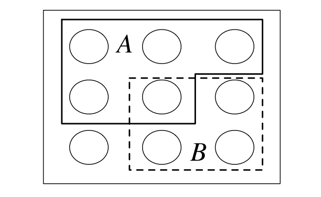

¿Qué es la probablidad? La probabilidad es la lógica de la incertidumbre. Esta disciplina nos proporciona un marco lógico para cuantificar la incertidumbre y la aleatoriedad de una manera rigurosa
Espacio Muestral y Eventos
El marco matemático de la probabilidad se construye alrededor de conjuntos.
Espacio Muestral (S) El \(\text{Espacio Muestral (S)}\) de un experimento es el conjunto de todos los posibles resultados de dicho experimento. Antes de realizar el experimento, se desconoce qué resultado ocurrirá. El espacio muestral puede ser finito, contablemente infinito o incontablemente infinito.
Evento (A) Un \(Evento (A)\) es un subconjunto del espacio muestral \(S\) \((A⊆S)\). Decimos que el evento \(A\) ocurrió si el resultado real del experimento es un elemento de \(A\).

Tipos de Eventos (Operaciones de Conjuntos)
Los conceptos de la Teoría de Conjuntos, como uniones, intersecciones y complementos, son esenciales ya que nos permiten construir nuevos eventos a partir de eventos previamente definidos.
| Evento | Notación de Conjuntos | Descripción en Palabras |
|---|---|---|
| Espacio Muestral | \(S\) | Algo debe suceder. Ocurre con certeza. |
| Evento Imposible | \(\emptyset\) | No puede ocurrir. Tiene probabilidad \(0\). |
| A o B | \(A \cup B\) | Ocurre al menos uno de \(A\) o \(B\). |
| A y B | \(A \cap B\) | Ocurren tanto \(A\) como \(B\). |
| No A | \(A^c\) | \(A\) no ocurre. |
| Eventos mutuamente excluyentes | \(A \cap B = \emptyset\) | \(A\) y \(B\) no pueden ocurrir simultáneamente (son disjuntos). |
Definición no Formal de la Probablidad
Históricamente, la primera definición de probabilidad se basaba en el conteo de resultados
Para un evento \(A\) en un experimento con un espacio muestral finito \(S\), la probabilidad ingenua de \(A\) es:
Restricciones de la Definicion no Formal
-
El espacio muestral \(S\) debe ser finito.
-
Todos los resultados deben ser igualmente probables.
El enfoque naive es aplicable cuando existe simetría en el problema que hace que los resultados sean igualmente probables (por ejemplo, lanzar un dado justo o un mazo de cartas bien barajado).
Advertencia: Es un error común asumir resultados igualmente probables sin justificación (por ejemplo, argumentar "sucederá o no sucederá, por lo tanto, 50-50").
Conteo: Multiplicación, Permutaciones y Combinaciones
Para calcular la probabilidad naive, a menudo es necesario contar el tamaño de los conjuntos \(A\) y \(S\), lo que requiere métodos de conteo.
Regla de la Multiplicación
La Regla de la Multiplicación establece que si un experimento compuesto consta de dos sub-experimentos, Experimento \(A\) con \(a\) resultados posibles y Experimento \(B\) con \(b\) resultados posibles por cada resultado de \(A\), entonces el experimento compuesto tiene \(a×b\) resultados posibles. Este principio se extiende a múltiples sub-experimentos y es la base para las reglas de muestreo.
Permutaciones (Muestreo Ordenado)
Cuando se selecciona una muestra, es crucial saber si el orden de la selección es relevante y si la selección se hace con o sin reemplazo,
| Tipo de Muestreo | Condición | Número de Resultados (Orden Importa) |
|---|---|---|
| Con Reemplazo | Se elige \(k\) veces de \(n\) objetos, volviendo a poner el objeto cada vez. | \(n^k\) |
| Sin Reemplazo (Permutación) | Se elige \(k\) veces de \(n\) objetos, sin poder elegir el mismo objeto dos veces (requiere \(k \le n\)). | \(n(n-1)\cdots(n-k+1)\) |
Nota: Una Permutación de \(n\) objetos es un arreglo de estos en algún orden, y hay \(n!\) de estas (caso \(k=n\) sin reemplazo).
Combinaciones (Muestreo No Ordenado)
Una Combinación o Coeficiente Binomial cuenta el número de subconjuntos de un cierto tamaño.
El coeficiente binomial \(\binom{n}{k}\), leído como "n en k", es el número de maneras de elegir k objetos de un conjunto de tamaño \(n\) donde el orden no importa.
\(\binom{n}{k} = \frac{n(n-1)\cdots(n-k+1)}{k!} = \frac{n!}{k!(n-k)!} \quad \text{para } k \le n\)
Axiomas de Kolmogorov y Definición General de Probabilidad
Para ir más allá de las limitaciones de la definición naive (espacios infinitos o resultados no equiprobables), definimos una función de probabilidad \((P)\) que debe satisfacer solo dos reglas (axiomas).
Un Espacio de Probabilidad consiste en un espacio muestral \(S\) y una función de probabilidad \(P\) que toma un evento \(A⊆S\) como entrada y devuelve un número real \(P(A)\) entre 0 y 1 como salida.
Axiomas de Kolmogorov
La función \(P\) debe satisfacer los siguientes axiomas:
\(1\). Rango y Normalización:
\(P(\emptyset) = 0, \quad P(S) = 1.\)
Esto significa que un evento imposible tiene probabilidad 0, y el evento cierto (el espacio muestral completo) tiene probabilidad 1.
\(2\). Aditividad (Sumatoria) Contable: Si \(A_1, A_2, ...\) son eventos disjuntos (mutuamente excluyentes), entonces la probabilidad de su unión es la suma de sus probabilidades:
\(P\left(\bigcup_{j=1}^{\infty} A_j\right) = \sum_{j=1}^{\infty} P(A_j).\)
Leyes y Propiedades Básicas de la Probabilidad
A partir de los dos axiomas, se pueden derivar muchas propiedades útiles que son válidas para cualquier función de probabilidad.
1. Regla del Complemento
Para cualquier evento \(A\):
Justificación: El evento \(A\) y su complemento \(A^c\) son disjuntos, y su unión es el espacio muestral completo \(S\). Aplicando el Axioma 2, \(P(S) = P(A \cup A^c) = P(A) + P(A^c)\). Dado que \(P(S) = 1\) (Axioma 1), se deduce la regla.
2. Monotonicidad (Ley de Inclusión)
Si un evento \(A\) está contenido en un evento \(B\) (\(A \subset B\)), entonces:
Justificación: Si \(A \subset B\), podemos descomponer \(B\) en dos eventos disjuntos: \(A\) y \(B \cap A^c\) (la parte de \(B\) que no está en \(A\)). Por el Axioma 2, \(P(B) = P(A) + P(B \cap A^c)\). Dado que la probabilidad de cualquier evento es no negativa, \(P(B \cap A^c) \ge 0\), lo que prueba que \(P(B) \ge P(A)\).
3. Ley General de Adición (Inclusión-Exclusión para dos Eventos)
Para cualesquiera dos eventos \(A\) y \(B\), no necesariamente disjuntos:
Justificación: Al sumar \(P(A) + P(B)\), la intersección \(A \cap B\) se cuenta dos veces. Se resta \(P(A \cap B)\) una vez para corregir esta doble cuenta. Este resultado se demuestra escribiendo la unión \(A \cup B\) como la unión de eventos disjuntos, por ejemplo, \(A \cup (B \cap A^c)\).